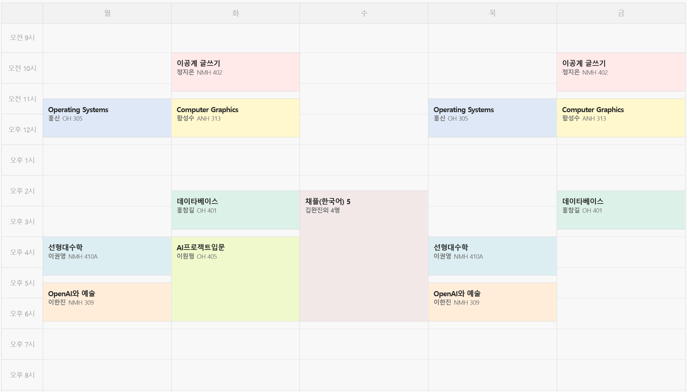
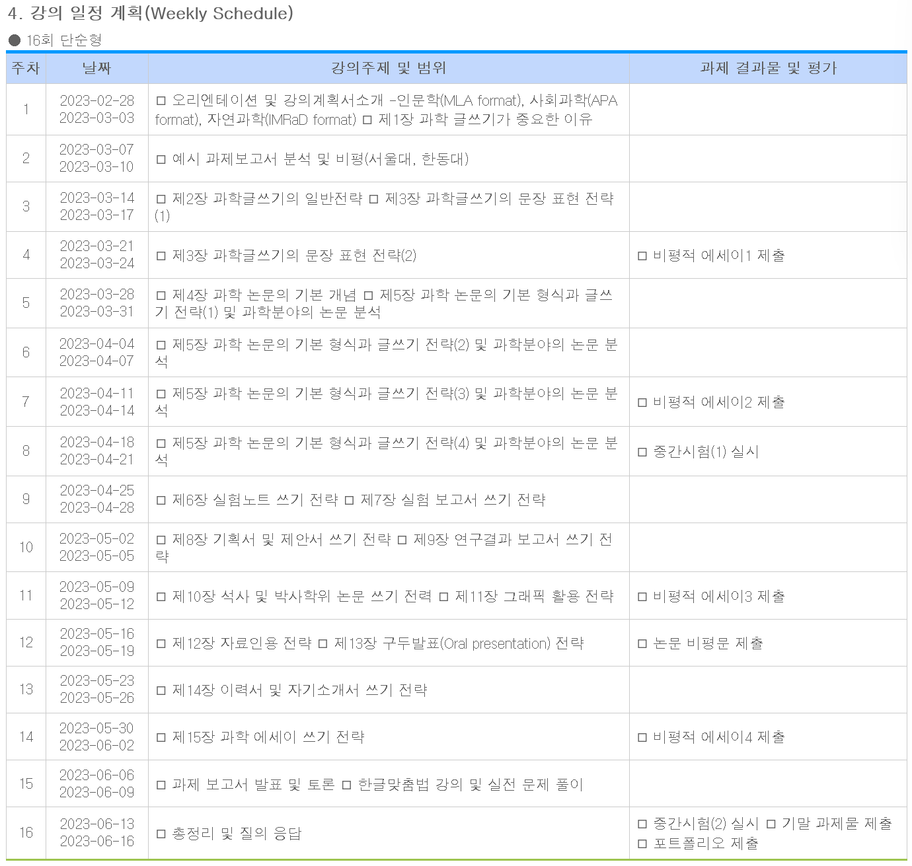
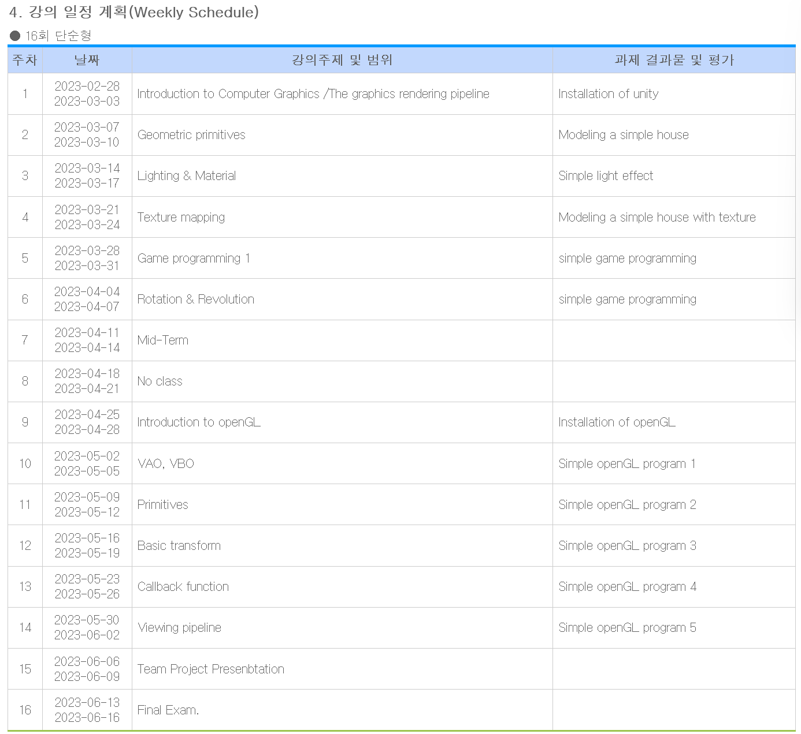

Introduction

OpenAI and Art
Introduction
Handong Universe
Introduction to Artificial Inteligence Project
Introduction
HW1
Investors are going nuts for ChatGPT-ish artificial intelligence
출처 링크:
- https://www.economist.com/business/2023/02/28/investors-are-going-nuts-for-chatgpt-ish-artificial-intelligence
소스의 날짜:
- 2023-02-28
간단한 요약:
- 생성AI는 현재 세상의 많은 사람들과 특히 투자자들의 주목을 받고 있다
- 500개 이상의 생성AI 스타트업이 생겨났다
- 생성AI 분야에서 장기적으로 모든 것을 가져갈 승자는 누가 될지 확실하지 않다
- 많은 스타트업들이 비슷하거나 더 나은 서비스를 제공하기도 하며 자원 소모가 심한 만큼 오픈소스 프로젝트에게 따라잡힐 수도 있다
- 저작권 침해와 같은 법적인 문제가 언제든지 터질 수 있다
- OpenAI는 GPT-4의 출시를 준비중
- 현 상황에서 가장 안전한 투자는 이러한 생성AI가 돌아가는데 필요한 프로세스 칩의 공급회사에 투자하는 것이다
- Cloud-computing services, data-center landlords, Nvidia같은 chip designer들은 앞으로 잘 될 수 밖에 없다
What impact will artificial intelligence have on education?
출처 링크:
- https://www.equaltimes.org/what-impact-will-artificial
소스의 날짜:
- 2023-03-03
간단한 요약:
- 요즘 AI가 생성하는 것들은 너무나 설득력이 있어 마치 AI가 사람과 같은 지능을 가지고 있고 이해하는 것 처럼 보이지만 절대 그렇지 않다
- 최근 AI가 대중에게 공개되어 수십만명의 사람들과 상호작용하며 '학습'하고 있다
- ChatGPT가 생성하는 문장들은 참이든지 거짓이든지 말이 되는 것처럼 결과를 생성하기 때문에 잘못 되었다 - Noam Chomsky
- ChatGPT는 좋은 책으로 공부하는 것보다 더 낫지 않다 - José F. Morales
- ChatGPT가 위험한 것은 절반은 참인 말을 절반을 거짓인 말을 모두 동일하게 설득력 있게 제공한다는 것이다
- 이해하지 못하고 말을 내뱉는 앵무새와 같이 단순한 "창의적인 도구"이다
- AI가 생성한 결과를 근거로 중요한 결정을 내리는 것은 위험하다
- AI가 하는건 감춰진 표절 "cloaked plagiarism" 이다
- Copy자체는 배우는 과정의 필수적인 요소이지만 어디서 가져왔는지 밝히지 않는 것은 잘못된 것이다
- 아직까지는 책이 훨씬 더 신뢰할 수 있는 소스이다
- AI는 학습을 처음부터 다시 시작하지 않고서는 한번 배운 것을 잊어버릴 수 없기 때문에 현재 대중적인 AI를 학습 시키는 기업들이 가르치는 한정된 정보들이 "valid and accurate knowledge"로 인식되어질 수 있다는 점
- 소셜 미디아에서 일어났던 것과 같은 실수를 반복하지 않으려면 개인이 원하는 정보로 training을 시킬 수 있을 때 까지 우리의 지식 관리를 AI에게 맡기면 안된다
- "패닉할 필요는 없지만 변화 할 필요는 있다" - Rose Luckin
- 단순히 사실을 외우고 그것을 기억해 내고 재현하는 것을 가르치는 것은 학생들의 미래에 적합한 인재가 되도록 하는 것이 아니다.
- 학생들이 스스로 "learner"으로 인식하도록 하고 어떤 정보가 어디에서 왔고 어떤 근거로 정보를 믿을지 잘 결정 할 수 있도록 가르쳐야 한다
- ChatGPT는 매우 빠르게 우리 삶의 일부로 자리 잡을 것이고 사람들은 그것을 잘 활용할 수 있도록 준비되어야 한다
- 우리의 결정 권한을 AI에게 넘겨주는 것은 정말 위험하다
- 아직 세상은 이 기술을 가지고 어떻게 뭘 해야 하는지 찾아가는 중이다
- 이 기술은 이제 감추려고 해도 감춰지지 않을 것이다 (학교에서 밴 하려고 해도 막을 수 없다)
- 21세기에 가져야 할 가장 중요한 능력 중 하나는 우리 주변의 모든 기술들과 함께 하면서도 안전하고, 책임감 있고, 건강하게 살아가는 것이다
Week 2
Data-Base
Introduction
Week 2
Engineering Writing - 이공계 글쓰기
강의 계획서

관련 사이트 모음
Introduction
글쓰기가 필요한 이유
- 논문 써야됨, 소통 해야됨, 많은 엔지니어와 비즈니스 사람들이 정말 필요한 기술이라고 설문
이공계서 접하는 글의 종류
- 논문, 발표 대본, 실험 보고서, 강의 노트,
글쓰기가 어려운 이유 / 어려운 점
- 많이 안써봐서, 시작 문구 작성하기, 등등
Week 2
비평문 6팀:
- 권은혁(21900050)
- 최예라(22200750)
비평문?
- 평가하는 글
과학 비평문 (Scientific Critique)
- 평론 -> 평가 대상의 가치를 매김
- 본인의 시각에서 객관적으로 평가 (evaluate)
- Q 본인의 시각이면서 객관적이다.. ?
- 궁극적 목표
- 현재의 지식체계와 사회를 발전시키는 기여도를 기준으로 평가
- 쉽게 써서 대중들에게 효과적으로 전달
과학 비평문의 종류
- 수필적
- 전체 내용 보다는 1,2가지 중점되는 소재나 주제
- 자유롭다 -> 주관적 견해 포함
- 대중에게 전달 목적
- 논증적
- 전체적으로 분석함으로 가치나 한계를 종합적으로 지적
- 논거를 제시해 가면서
- '머리말-본문-맺음말'의 형태
- 객관성 확보
준비
- "비평하고자 하는 과학 분야의 정보를 가능한 많이 수집"
- "비평을 할 과학적 대상이 주어지면, 먼저 그 대상을 자세히 분석하여 무엇이 중요하나지를 파악하고, 그 가운데 구체적으로 어떤 것을 비평 대상으로 삼을 것인지를 정해야 한다"
- "수강을 하고 있는 특정 교과목에서 비평과제를 부여하면서그에 대한 비평 지침을 미리 알려 주는 경우에는 이 비평 지침을 염두에 두고 비평 대상물을 분석해야 한다"
- "비평 대상이 되는 책이나 자료를 읽을 때는 적절하게 메모를 하는 것이 필요하다"
과정
- "창조적이고 비판적으로 자료를 읽고 분석하기"
- 핵심적인 주장 찾기
- 뒷받침 하는 증거의 설득력
- 내용 연결성
- 오류
- 육하원칙 질문하면서 분석 (Who, When, Where, What, hoW, Why)
- "필자가 주장하는 바를 뒷받침하는 데이터나 사실을 확인해 보기"
- "데이터와 자료의 내용을 요약하고 메모하기"
- "비평 대상의 가치를 평가하기"
- 이론적이고 객관적인 자료에 근거해서 가치가 있는지 없는지 평가
- Q: 어떤 가치? 어떤 관점으로서의 가치를 말하는 것인가?
- "비평문을 작성하기 위한 기획서 만들기"
- ~설계도
- 기획서에 들어갈 요소들:
- "비평문을 쓰기 위한 대상 선정"
- "비평문의 주제 및 개요 작성"
- "비평문 쓰기를 위한 자료의 수집"
- "자료의 분석 및 비평"
- "비평문의 프레임(frame) 만들기"
- 논리 개요도
- 서론-본론-결론
- 논리 개요도
- 초안(first draft) 쓰기
- 교정하기
- 내용면에서의 교정
- 구성면에서의 교정
- 표현면에서의 교정
비평문의 일반적 형식과 내용
들머리 (Introduction)
본문 (Main body)
마무리 (Conclusion)
질문
- 비평문을 비평 (?)
Linear Algebra
Ch1 s1
Ch1 s2-3
Operating Systems
홍신 교수님
주교재 : Operating Systems: Three Easy Pieces
No NFC !
4~6 assignments
- week 1: Ch 1,2
- week 2: Ch 3, 4, 5
- week 3: Ch 6, 7, 8 ...
Introduction
What is Computer?
-
Computer vs Calculator
-
Fundamental contructing units of a computer
- CPU - memory
Ch2 Introduction to Operating Systems
-
Running Program
- fetch - decode - execute -> repeat (Von Neumann model)
-
OS
- primary goal: make system easy to use
- method: virtualization
- virtualization
- OS referred to virtual machine
- physical resource -> virtual form
- OS exports few hundred system calls for application to use
- can also say that the OS provides a standard library to applications
- resource manager
- resource: CPU, memory, disk
-
CRUX OF THE PROBLEM
-
"how does the operating system virtualize resources?"
- OS implements mechanisms and policies
2.1 Virtualizing the CPU
- Creating an illusion that the system has a large number of virtual CPUs
-
run many programs at once -> virtualizing the CPU
-
how to decide which should run at specific time?
- policy
-
resource manager
-
2.2 Virtualizing Memory
- model of physical memory
- simply just an array of bytes
- virtualizing memory
- private virtual address space
2.3 Concurrency
- Problems that arise when working with many thigs at once
- OS, modern multi-threded programs
- Thread:
- function running within the same memory space as other functions
- more than one of them active at a time
- Q: What does it mean by active?
- CRUX OF THE PROBLEM
- "How can we use primitives and mechanisms to solve the problems of concurrency?"
- problems occur when reading file at the same time
- because load, update, write instructions are not executed atomically
2.4 Persistence
- DRAM is volatile
- I/O device
- hard drive, solid-state drives
- OS -> manage disk using program -> file system
- disk space is shared (not virtualized like CPU and memory)
- when creating and writing to file
- open(), write(), close(); these system calls are routed to file system which handles the request and return result
Process
Computer Graphics

Introduction
Week 2
Web3@KAIST
link: http://web3classdao.xyz/kaist/
GHOST Flutter Study
-
GHOST 26기 졸업생 15학번 박민준 선배님께서 가르쳐 주시는 Flutter 수업
-
잠정적으로(?) 화요일, 목요일 밤 23~24 진행
-
2시간 중 1시간은 Flutter 스터디, 1시간은 피드백과 코드 리뷰로 진행
-
첫 모임 전에 Flutter 개발환경 구성 완성:
- https://docs.flutter.dev/get-started/install
-
모임은 Discord로 진행
유용한 사이트 목록
- fluttermapp.com/widgets
- www.fluttermapp.com/widgets
- flutter.dev
- pub.dev
Flutter 레이아웃 기초 위젯 가이드
숙제
- 내가 평소에 자주 사용하는 앱 보고 Flutter로 만든다면 Layout 어떻게 구성할지 대충 만들어 오기
네이버 웹툰 cloning(?)
새로 배운 Widget들:
- Sliver 관련
- Sliver 사전적 의미: "세로로 자르거나 잘라낸 얇은 조각. 파편"